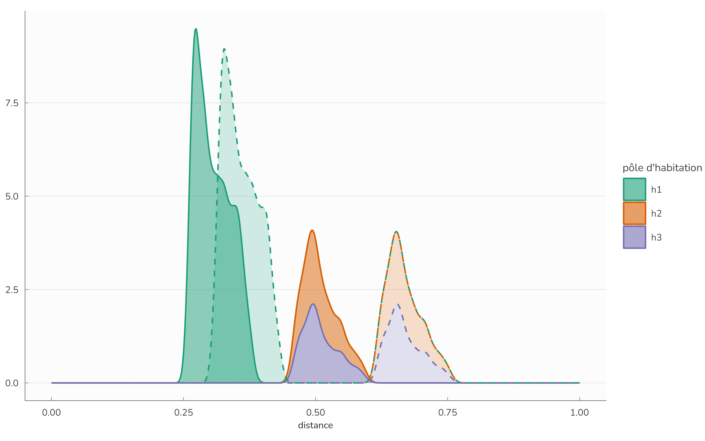

2 MEAPS : Simulations synthétiques
2.1 Simulations numériques synthétiques
Pour étudier quelques unes des propriétés du modèle nous proposons ici d’explorer son comportement sur des données synthétiques. Les données synthétiques, générées de façon explicites, permettent de contrôler les variations de paramètres afin d’en isoler les conséquences. Ces simulations ne prétendent pas ni à l’exhaustivité ni à la démonstration, mais peuvent servir à appuyer l’intuition. L’ensemble de la partie sur les simulations synthétiques est exécutable au sens de Lasser (2020). Les codes nécessaires à la reproduction de ces simulations et des graphiques associés sont disponibles sur github.com/xtimbeau/meaps et exécutables librement.
2.1.1 Trois pôles en centre et satellites
Nous construisons un territoire abstrait composé d’un “centre ville” et de “deux périphéries” (figure fig-territoire). Cette configuration arbitraire nous permet d’évaluer MEAPS en simulant les trajets et leur distribution. Chaque individu et chaque emploi sont localisés, distinctement les uns des autres, ce qui permet de calculer des distances euclidiennes entre chaque habitant et chaque emploi et d’en déduire un classement pour chaque habitant sans ambiguïté des emplois en fonction de leur éloignement de chaque résident. Tous les emplois sont considérés comme homogènes et on suppose une probabilité de fuite identique de 10% pour tous les individus. Les distances entre les pôles sont données dans le tableau tbl-distances (dans une unité sans intérêt).
| e1 | e2 | e3 | |
|---|---|---|---|
| h1 | 0.0 | 0.6 | 0.7 |
| h2 | 0.6 | 0.0 | 1.3 |
| h3 | 0.7 | 1.3 | 0.0 |
Pour assurer l’égalité entre demandes et offres d’emploi, on tire aléatoirement 4 500 emplois. Les trois pôles d’emplois ont les mêmes centres que les pôles d’habitation, mais ont une répartition plus resserrée que pour les habitants. Comme indiqué sur la figure fig-territoire, les tâches d’emplois 1 à 3 sont respectivement localisés autour des mêmes centres que les zones d’habitation 1 à 3. Les pôles périphériques comportent moins d’emplois (5% chacun) que le pôle central (80% de l’emploi total) afin de représenter dans les pôles périphériques des emplois présentiels, liés aux services fournis aux résidents (comme des commerces ou des écoles) et d’une zone d’activité centrale. Nous ne faisons aucune distinction de productivité ou de qualification nécessaire pour les emplois. Cette hypothèse simplifie la simulation du modèle, mais rien n’empêche de distinguer des catégories d’emplois, des catégories d’habitants ni d’introduire des éléments de choix entre distance et nature de l’emploi. Nous ne considérons ici pas le choix de la localisation et considérons toutes les localisations comme exogènes.
Dans l’analyse statistique qui suit, on procédera à une agrégation spatiale en pavant le plan où sont localisés emplois et habitants par des hexagones adjacents. Cela correspond à une analyse empirique où les données de localisation sont carroyées.

La figure fig-distances simule MEAPS à partir des données de figure fig-territoire. On obtient pour chaque hexagone où résident des habitants une valeur moyenne de distance jusqu’à leur emploi. De la même façon, on calcule pour chaque emploi la distance accomplie en moyenne pour l’atteindre.

Cette première représentation graphique permet de se représenter le fonctionnement du modèle MEAPS. On peut générer une distribution de trajets (dans les vignettes de la figure fig-distances). Comme la majorité des emplois se trouvent dans le pôle central, les distances moyennes pour les habitants y sont plus faibles que dans les autres pôles. Le modèle génère un peu de variance à l’intérieur de chaque pôle. On retrouve l’idée que les hexagones d’habitations les plus excentrées génèrent des distances plus importantes. La distribution des distances moyennes pour atteindre un emploi est plus resserrée que celle des distances parcourues en moyenne par habitant. Les moyennes de ces deux distributions sont égales (par construction).
On peut construire une table des flux entre chaque pôles (tableau tbl-fluxpoles). Le premier élément est de noter que les contraintes aux marges sont parfaitement respectées, ce qui est le principe de construction de MEAPS, les approximations faites dans l’algorithme de résolution restant ici inférieures à 10^{-5} au moins. Par ailleurs, la table de flux confirme le diagnostic précédent. La plupart des habitants de h1 (95%) se rendent dans g1 (le même pôle donc). Ce taux d’“auto-emploi” est de 10% à 20% pour les deux autres pôles. Cela tient au déséquilibre de localisation des emplois et est une propriété souhaitée du modèle. Cela explique en partie la distribution des distances pour les habitants et également le concept réciproque (distances moyenne vers un hexagone d’emplois).
| e1 | e2 | e3 | total | |
|---|---|---|---|---|
| h | 2 959 | 99 | 93 | 3 150 |
| h | 523 | 134 | 18 | 675 |
| h | 518 | 18 | 139 | 675 |
| total | 4 000 | 250 | 250 | 4 500 |
Pour apprécier le comportement du modèle, on peut procéder à une expérience de pensée dans laquelle on éloigne le pôle 3 des deux autres pôles (la distance entre 1 et 3 passe de 0.7 à 1.2 dans cette expérience). Le tableau tbl-fluxpoles2 est obtenu en re-simulant le modèle sur la nouvelle géographie. Le résultat est très proche du modèle précédent. Les flux entre le pôle 1 et 3 sont marginalement modifiés (de 2 ou 3) alors que ceux entre h1 et e2 ou e3 le sont un peu plus, traduisant des changements de rangs possibles pour les habitants de h1 entre e2 ou e3 (qui est plus loin). Ce résultat est conforme à l’intuition et également une propriété souhaitée du modèle. Les distributions des distances (sortantes et arrivantes) sont plus largement modifiées, puisque 3 est plus loin de 1 et 2, comme l’indique la figure fig-distances2. Les habitants de h1 préfèrent e2 à e3 et réduisent un peu leur trajets vers e3 mais augmentent leurs distances. L’accroissement de la saturation sur e2 conduit à des trajets vers e3 (de h1, h2 et h3) qui marque la distribution des distances. la figure fig-denscomp éclaire ce qui se passe par pôle.
| e1 | e2 | e3 | total | |
|---|---|---|---|---|
| h | 2 992 | 85 | 73 | 3 150 |
| h | 508 | 133 | 34 | 675 |
| h | 500 | 33 | 142 | 675 |
| total | 4 000 | 250 | 250 | 4 500 |


2.1.2 Comparaison avec le modèle gravitaire
Comparer MEAPS au modèle gravitaire permet d’en comprendre les avantages. Pour ce faire, nous simulons un modèle gravitaire suivant l’équation eq-gravmod, c’est-à-dire permettant le calage sur les lignes (chaque individu a un emploi) et sur les colonnes (chaque emploi est pourvu). Ce modèle est simulé au niveau désagrégé, c’est-à-dire dans ces simulations synthétiques au niveau de chaque individu et de chaque emploi à partir de la configuration géographique décrite plus haut en sec-3p2s. La spécification du modèle gravitaire est faite en utilisant comme fonction f l’expression suivante où \delta est un paramètre positif :
f(d) = e^{-d/\delta} \tag{2.1}
De plus le modèle gravitaire est normalisé en utilisant un algorithme de Furness (Dios Ortúzar et Willumsen 2011) dans lequel on normalise d’abord sur les lignes (chaque individu a un emploi et un seul en probabilité, en tenant compte du paramètre de fuite), puis sur les colonnes (chaque emploi est pourvu complètement). On itère ces normalisations en ligne puis en colonne jusqu’à obtenir une matrice de flux stable. Ces normalisations suivent les équation eq-ai et équation eq-bj.
Ce modèle gravitaire ainsi spécifié est ajusté sur la simulation MEAPS en prenant comme référence les flux du tableau tbl-fluxpoles, construits par agrégation sur les groupes d’habitants et d’emplois – donc une matrice 3 \times 3. L’ajustement est réalisé en calibrant le paramètre \delta de façon à minimiser l’entropie relative de Kullback-Leitner des distributions agrégées (cette notion d’entropie est détaillée dans la sec-ajust). Le résultat de l’estimation est proposé dans le tableau tbl-fluxgrav et correspond à une valeur de \delta \approx 0.435
| MEAPS | Gravitaire | ||||||||||||||||||||
|---|---|---|---|---|---|---|---|---|---|---|---|---|---|---|---|---|---|---|---|---|---|
|
| ||||||||||||||||||||
L’ajustement du modèle gravitaire donne un résultat correct. Une des raisons de ce bon résultat découle de la symétrie de la configuration géographique. Les deux satellites sont à même distance du pôle central et la fonction f qui ne dépend que de la distance permet d’assurer une répartition des flux entre chacun des pôles sans trop de difficulté. Si on prend une configuration non symétrique, en éloignant un des deux satellites, l’autre restant à sa place, comme dans la configuration du tableau tbl-fluxpoles2, on obtient un schéma différent reporté sur tableau tbl-fluxgrav2.
| MEAPS (3 éloigné) | Gravitaire (3 éloigné) | ||||||||||||||||||||
|---|---|---|---|---|---|---|---|---|---|---|---|---|---|---|---|---|---|---|---|---|---|
|
| ||||||||||||||||||||
Le modèle MEAPS conserve une configuration proche dans le cas d’un pôle 3 éloigné de celle de référence. Le recul du pôle 3 introduit une dissymétrie légère parce que les habitants de 3 classent plus systématiquement les emplois de 3 en tête de leur besoin. Mais la modélisation radiative n’exclue pas que ces habitants choisissent des emplois en 1 voire en 2. Le plus grand éloignement ne modifie pas radicalement leurs choix. En revanche, le modèle gravitaire renvoie une réponse très différente de celle du cas de référence : pratiquement tous les emplois de 3 sont occupés par des habitants de 3. Cela induit une grande dissymétrie dans les choix d’emplois. Cette propriété du modèle gravitaire est attendue. La fonction f donne un poids très faible aux emplois plus distants au point qu’ils ne sont plus choisit que lorsque la normalisation intervient. La réponse de MEAPS parait plus adaptée à ce que l’on observe. Lorsque des communes sont satellites d’un pôle central, il existe des flux vers cette commune pour occuper des emplois, y compris lorsque la commune est plus éloignée. Nous verrons lors de l’application à l’agglomération de la Rochelle, en utilisant des données décrivant les flux entre commune de résidence et commune d’emploi (issues de INSEE (2022)) que MEAPS permet une meilleure représentation de la réalité que le modèle gravitaire.
Si l’on reconduit la procédure d’estimation du paramètre \delta sur la configuration géographique où le pôle 3 est éloigné on aboutit à \delta \approx 0.899 . Cette valeur est différente du paramètre précédent. Mais surtout, il n’est plus possible avec le modèle gravitaire de représenter des flux presque symétriques et donc la qualité de l’ajustement s’en trouve dégradée (tableau tbl-fluxgrav3).
| MEAPS (3 éloigné) | Gravitaire (3 éloigné) | ||||||||||||||||||||
|---|---|---|---|---|---|---|---|---|---|---|---|---|---|---|---|---|---|---|---|---|---|
|
| ||||||||||||||||||||
2.1.3 Procédure d’estimation
Il est possible de modifier les pondérations des probabilités d’absorption de façon à modifier la table des flux. Ceci est illustré dans la table suivante où on a doublé pour chacune des 9 paires possibles de zone d’habitation (3) et de zone d’emploi (3) la probabilité relative d’absorption successivement. La configuration géographique est celle de la figure fig-territoire, avec un centre et deux satellites. Le centre comporte plus d’emplois que de résidents, ce qui oblige à des flux entrants dans la zone 1 comme indiqués dans la tableau tbl-fluxpoles. On parle de doublement relatif de la probabilité, parce que les contraintes de constance de probabilité de fuite et de saturation des emplois imposent une réduction des probabilités d’absorption des autres emplois, ce qui est assuré dans l’algorithme qui implémente MEAPS.
Le tableau tbl-fluxpond décrit les variations de flux par rapport à une situation de référence (celle de tableau tbl-fluxpoles), arrondi à l’entier le plus proche. Il y a donc 3 \times 3 matrices 3 \times 3. Chacune des sous matrices indique les variations de flux pour chaque paire origine destination et il y a 9 possibilités de doublement de la probabilité d’absorption qui constitue les lignes et les colonnes de la matrice englobante. On notera que les sommes des colonnes de chaque sous matrice sont nulles, ce qui indique le respect des contraintes en ligne et en colonne.
Conformément à l’intuition et malgré les effets induits par le respect des contraintes en ligne et en colonne, on observe bien que la paire zone d’habitation zone d’emploi qui se voit augmentée en probabilité relative connait des flux supérieurs. Pour compenser ces flux supérieurs, dans la même colonne, c’est-à-dire pour les flux en provenance des autres zones d’habitation, on constate systématiquement une diminution des flux en provenance des autres zones d’habitation. Symétriquement un accroissement des flux de la zone d’habitation i vers la zone d’emploi j induit toujours une diminution des flux de i vers les autres zones d’emploi.
| e1 | e2 | e3 | ||||||||
|---|---|---|---|---|---|---|---|---|---|---|
| e1 | e2 | e3 | e1 | e2 | e3 | e1 | e2 | e3 | ||
| h1 | h1 | 39 | -20 | -19 | -28 | 31 | -2 | -29 | -2 | 31 |
| h2 | -20 | 16 | 4 | 25 | -26 | 1 | 4 | 1 | -5 | |
| h3 | -19 | 4 | 15 | 3 | -5 | 2 | 25 | 1 | -26 | |
| h2 | h1 | -34 | 29 | 5 | 33 | -33 | -1 | 3 | 5 | -7 |
| h2 | 41 | -34 | -7 | -37 | 38 | -1 | -8 | -6 | 13 | |
| h3 | -6 | 5 | 2 | 4 | -5 | 1 | 5 | 1 | -6 | |
| h3 | h1 | -35 | 6 | 29 | 2 | -7 | 5 | 34 | -3 | -31 |
| h2 | -6 | 1 | 5 | 5 | -6 | 1 | 3 | 3 | -6 | |
| h3 | 41 | -7 | -34 | -7 | 13 | -6 | -37 | 0 | 37 | |
| Le tableau représente l'écart entre les flux obtenus pour une probabilité d'absorption doublée pour la zone i d'habitation et la zone j d'emploi, pour chaque paire de zones habitation/emploi. La première matrice en haut à gauche indique donc que le flux entre la zone 1 d'habitation et la zone 1 d'emploi est accru de 39 lorsque la probabilité d'absorption relative est doublée. Pour compenser ce flux plus important entre 1 et 1, le flux en la zone d'habitation 2 et l'emploi 1 est réduit de 20, ce qui implique à son tour que ceux entre 2 et 2 et entre 2 et 3 s'accroissent. | ||||||||||
Une propriété intéressante des matrices de la tableau tbl-fluxpond est que les 9 matrices 3 \times 3 forment un espace vectoriel de dimension 41. Ceci est attendu, puisque les contraintes réduisent la dimension de 9 (=3\times 3) à 4, puisqu’il y a 3 contraintes dans chaque dimension (lignes et colonnes) et qu’une est redondante (si les somme sur chaque ligne sont nulles, alors la somme de tous les coefficients est nulle et donc si les sommes sur deux colonnes sont nulles, la troisième l’est nécessairement). Cela indique que, au moins localement (au voisinage de la matrice de flux calculée en tableau tbl-fluxpoles), il est possible de modifier les probabilités d’absorption pour atteindre n’importe quelle matrice de flux. A l’approximation linéaire près, il est donc possible de reproduire n’importe quelle structure de flux agrégés par un jeu de paramètres saturant exactement la dimension de cette structure de flux. Cette propriété permet d’envisager différentes approches d’estimations, suivant les données dont on dispose et du nombre de degrés de liberté que l’on est prêt à consacrer à la reproduction des données.
1 Les valeurs propres de la matrice 9 \times 9 constituée des 9 vecteurs colonnes des 9 matrices “dérivées” sont (133.3, 97.3, -28.6, 22.0, 0, 0, 0, 0, 0). Les 5 valeurs propres nulles et les 4 non nulles permettent de conclure que la dimension de l’espace vectoriel engendré par les 9 matrices est 4.
Le temps de calcul peut être assez long du fait de la nécessité de répéter un grand nombre de tirages, mais la section suivante ( sec-ergemp) montre que ce nombre peut rester raisonnable. Une estimation de ce type est mise en oeuvre par une procédure itérative dans la section sec-rochelle, permettant de reproduire à l’aide de MEAPS les données issues de l’enquête mobilités professionnelles INSEE (2022) avec un schéma de calcul qui peut se mettre facilement en œuvre.
2.1.4 Ergodicité en pratique
L’utilisation de données synthétiques permet de tester simplement l’hypothèse d’ergodicité. On a conjecturé que les différentes grandeurs moyennes sur les permutations u étaient assimilables à des observations, éventuellement répétées. A ce stade de simulations synthétiques nous ne confrontons pas le modèle à des observations (voir sec-rochelle), mais nous allons montrer que l’estimation des valeurs moyennes ne demande pas l’examen des I! permutations possibles2 et peut se contenter d’une agrégation spatiale et de quelques tirages de permutations.
2 Par la formule de Stirling log_{10}(I!) \approx (n +1/2)log_{10} n +log_{10}\sqrt{2} - n log_{10}e \approx 5\times10^5 pour I=10^5, ce qui fait un nombre de grande taille.
Pour illustrer cette propriété, nous répétons les simulations du modèle pour plusieurs tirages de priorités (notés u dans la section sec-erg). En prenant la moyenne sur un échantillon de u, on peut construire un estimateur des grandeurs moyennes et montrer qu’avec un échantillon petit par rapport à I!, on peut les estimer avec fiabilité et dans un temps raisonnable. Cette propriété sera montrée sur la structure géographique particulière que nous avons synthétisée, sans que cela permette de le généraliser avec certitude. Il existe sans doute des configurations spatiales pathologiques qui contredisent cette conjecture.
La figure fig-emperg illustre les processus stochastiques à l’œuvre dans le modèle et leur résolution par la moyennisation sur les tirages possibles. On applique le modèle en tirant aléatoirement des permutations de priorité de choix. On représente alors pour quelques hexagones d’habitation (tirés au sort) l’ensemble des choix de destination (carroyés dans les hexagones). Le carroyage opère déjà une moyennisation puisque chacun des individus de chaque hexagone a un ordre de priorité différent. On représente alors les quantités d’emplois (la probabilité de choisir comme emploi un emploi qui se trouve dans l’hexagone d’arrivée). Les lignes blanches illustrent la dépendance au tirage de priorité. Mais au bout de quelques tirages, ces probabilités convergent en moyenne. Pour simuler le modèle, il n’est pas nécessaire (en toute vraisemblance) de parcourir l’univers entier des permutations.

Le schéma de saturation et de priorité est illustré par la figure fig-rangerg ci-dessous. Pour chaque carreau d’arrivée (un emploi), on représente le rang moyen (gauche) et son écart type (droite) au moment de la saturation. La caractère stochastique découle du tirage aléatoire de l’ordre de chaque individu (les carreaux de départ). Pour la plupart des emplois, le rang moyen de saturation ergodique est atteint très rapidement. Trois bandes blanches apparaissent sur le graphique. Pour beaucoup d’emplois le rang moyen est le même et élevé. Pour quelques emplois le temps de convergence vers un état indépendant des tirages est plus long que pour la grande majorité. Pour un grand nombre de destinations, l’écart type est faible. Ces graphiques confirment qu’à quelques exceptions, l’état du système est stable après quelques tirages et le calcul de la moyenne.

Le rang moyen au moment de la saturation est une information qui peut être utilisé pour construire un indicateur localisé de tension.
Le tableau tbl-fluxpoles_conf indique les intervalles de confiance à 90% que l’on peut construire à partir des simulations précédentes. On obtient une stabilité satisfaisante, bien que les flux agrégés soient stochastiques.
| e1 | e2 | e3 | |
|---|---|---|---|
| h1 | 2920 |
114 |
116 |
| h2 | 539 |
121 |
15 |
| h3 | 540 |
15 |
120 |
| Source: MEAPS, intervalle de confiance à 90%, 500 tirages | |||